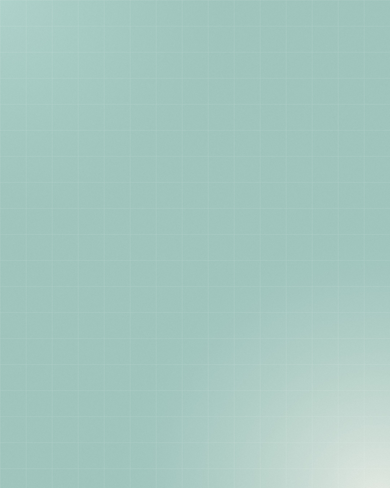

Escritório do Cuidado
Depoimentos
Os meus hábitos mudaram, e não foi um sacrifício. [...] Não é aquela dieta impossível de fazer. É algo pra vida.
Colaboradora atendida pelo Escritório do Cuidado
Agradeço por me ajudar a olhar para as minhas conquistas com mais gentileza e reconhecer que o processo não precisa ser perfeito para estar funcionando.
Colaboradora atendida pelo Escritório do Cuidado
Ficamos bem felizes ao ouvir de uma paciente o quanto o que estamos fazendo mudou a cultura da empresa. [...] Todos estão se alimentando mais saudável, se movimentando mais e fazendo melhores escolhas.
Equipe do Escritório do Cuidado
“O que é bom a gente tem que compartilhar.”
@fairhealth.br
Fazemos o certo pelos motivos certos.
Trechos de depoimentos e de relato da equipe, publicados com autorização e sem nomes. Cortes marcados com [...].